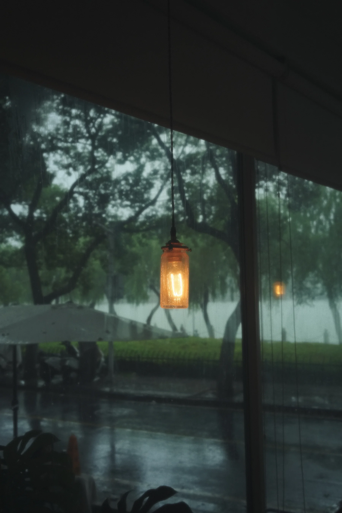

Photography by Kris Huang
Portrait · Documentary · Landscape
Portrait
Selected portrait works.


Documentary
Documentary and street photography.


Landscape
Landscape photography collection.


About
I photograph people, places and quiet moments that deserve to be remembered.
I'm Kris, a photographer focused on portrait, documentary and landscape photography.